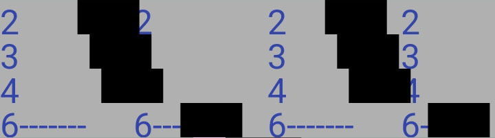

Multi-partial Mode Setup
>>> Note that when the multi-partial mode is enabled, the Settings item labelled "Edit Table of Partials" takes you to the table of multi-partials. If you want to edit the regular single partial table while in this mode go to Settings and instead of tapping on "Edit Table of Partials", touch and hold (long-press) "Edit Table of Partials". That will take you to the single partial table regardless of whether the multi-partial mode is enabled.

In multi-partial mode each note can process up to four different partials in bands in the Phase Display. You can enter multi-partial mode by swiping down from the Phase Display all the way into the Spectrum Display. This will give you the choice of single partial mode, multi-partial mode with separate bands for each partial, or multi-partial mode where the tuning error for the several partials is combined into one display.On this page you can change which partials are shown for any note by tapping and holding (long-press) the partials shown in that list. In the prompt that appears, enter one to four new partials that you would like to see used for that note. You can use either spaces or other non-numeric symbols to separate the numbers you enter. The software will ensure you can only enter valid numbers for that note.
Since it is laborious to enter numbers for every note in the scale, the "dup" button is provided to duplicate the numbers from the selected note into the next note. In this manner you can quickly set the multiple partials for a block of consecutive notes to the same numbers. The software will enforce reasonable limits on which partials can be used for which notes.
Other settings can be accessed by tapping on the button labeled ". . .". Settings include the combined/separate switch and the highest note used with multi-partials.
When you start a new tuning, a default set of multi-partials is loaded. To change the default multi-partials for a new tuning, tap on the "store as default" button. Just like the single partials, the table of multiple partials is also saved whenever you save a tuning file. Different tuning files can have different sets of multiple-partials.
If you long-press the "store as default" button you can revert to the factory settings for the default multiple partials table used for new tunings.